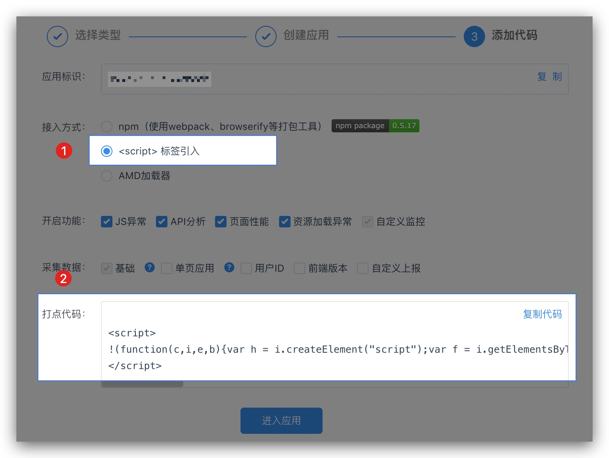
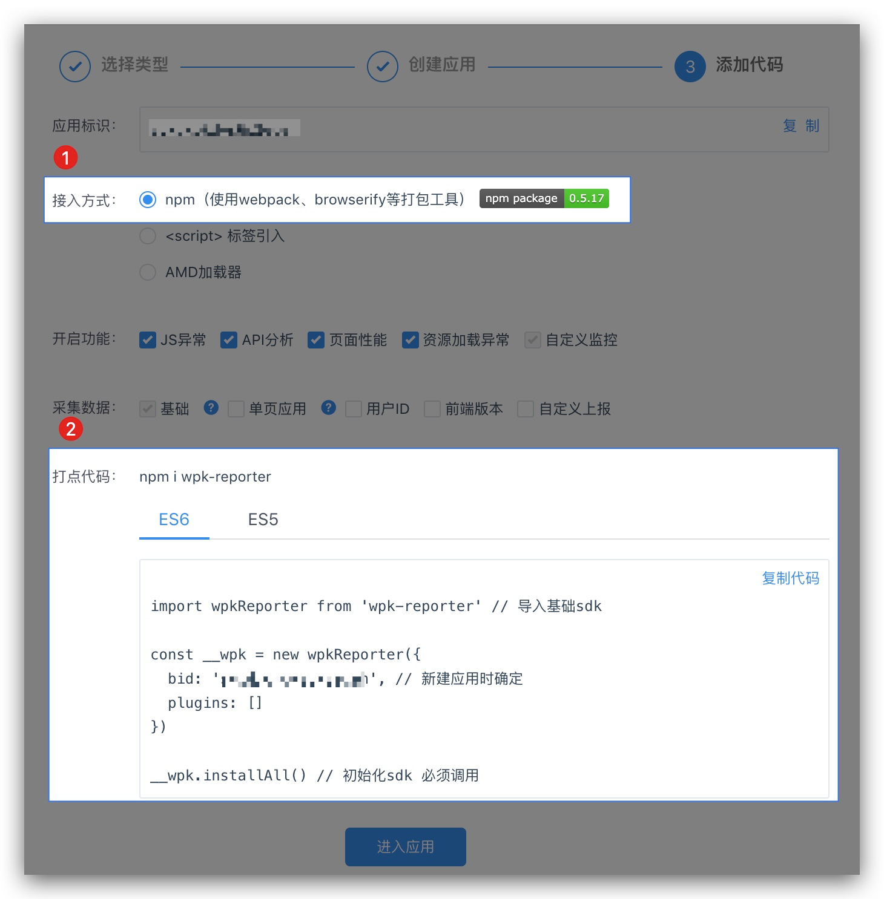
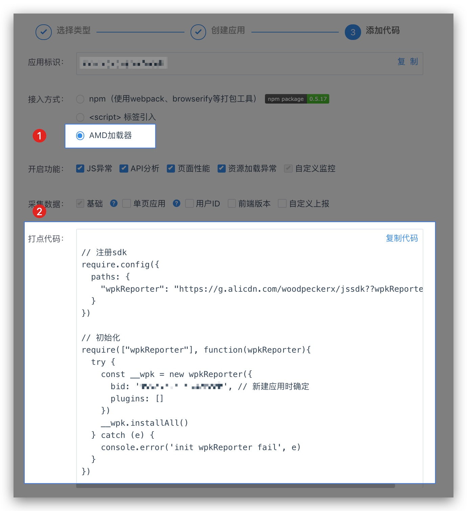

高级选项
探针 API 使用入门
1、探针接入方式
1.1 cdn 方式接入（快捷接入）
请按照以下步骤和图例说明接入探针。
- 在平台创建 HTML5 应用后，选择
<script>标签引入接入方式。 - 点击复制代码并粘贴到
</head>节点。
注意事项
- 在 head 内初始化能更早发现初始化前的问题。也可以放到 body 内，但必须保证在 onLoad 之前初始化，否则会丢失 PV 和页面性能数据。
- 使用 amd 加载器（如 requirejs）的页面不能直接使用这段脚本。

1.2 npm 方式接入
请按照以下步骤和图例说明接入探针。
- 在平台创建 HTML5 应用后，选择 npm 接入方式。
- 按照平台指引，安装探针，并复制初始化代码到您的代码中。

示例代码
import wpkReporter from "wpk-reporter"; // 导入基础sdk
const __wpk = new wpkReporter({
bid: "5ljeschs-nk2v7ecl", // 新建应用时确定
spa: true, // 单页应用开启后，可更准确地采集PV
uid: "", // 支持函数，需返回最终的uid字符串
rel: "", // 支持函数，需返回最终的版本字符串
plugins: []
});
__wpk.installAll(); // 初始化sdk 必须调用
// 主动上报自定义数据(PS此处为示例)
__wpk.report({
category: 100, // 必填创建自定义监控项时自动生成
msg: "hello world",
c1: "xx" // 自定义字段，支持c1~c5共5个字段
});
1.3 amd 方式接入
wpkReporter.js 是一个 umd 模块，兼容 普通 H5、amd、cmd 跟 nodejs 等多种环境。如果你的页面使用了 amd 规范的模块加载器，比如 requirejs，那么有下面两种引用方式。
请按照以下步骤和图例说明接入探针。
- 在平台创建 HTML5 应用后，选择 AMD 加载器 接入方式，如下图所示。
- 按照平台指引，复制初始化代码到您的代码中。

2、数据上报
通常情况下，若无自定义上报数据需求，那么探针接入已经完成。
如果您有自定义上报数据的需求，探针提供了主动上报数据的 API。
2.1 上报自定义监控
API: report(logData)
- 创建自定义监控项
为了数据能在平台正确展示，首先需要在平台创建一个监控项 「应用设置-监控项管理-添加监控项」。
- 在你的页面根据业务上报数据
3、API
温馨提示
- 调用 api 之前，请确保实例本身已被初始化
- 所有 api 都返回探针实例本身，因此所有 api 都可以链式调用
.report(logData)
主动上报一条自定义日志，日志类容为 logData 且必填，logData 支持的属性如下。
.reportFlow()
主动上报一条打点日志，上报一次，平台「页面分析」中的 PV 会增加 1。
.reportError(error)
用于主动上报一条 JS Error 日志；error 为 JS Error 对象。
.reportApiError(data)
用于主动上报一条 API 监控日志。
- 适用场景
探针本身已经支持对 api 进行监控，api 请求的成功失败，通过 status 的值判断，若您的 api 返回值都是 200，而通过 response body 判断中的自定义 code 判断，建议使用此 API 自行上报。
.setConfig(opts)
更新探针实例配置。
.install()
探针安装，即初始化所有配置和插件后调用此方法，探针才能正常工作。
注意：调用此 api 安装探针时，只对 plugins 中已配置的插件生效。
.installAll()
全家桶式的安装探针，内置所有插件将全部生效。
.uninstall()
卸载探针实例，销毁所有监听实例，主动上报、自动上报功能不再生效。
探针 API 使用进阶
本文将会进一步为你讲解探针构造函数配置、设置插件、如忽略部分 JS 异常、设置用户 id 等。
1、探针配置
在《快速接入》一文中已经讲到了如何初始化探针，而初始化探针时可通过构造方法传入 Object 类型的配置参数。本文将深入讲解配置参数。
1.1、 探针配置 demo
创建探针实例代码示例。
// 1、 构造方法参数设置配置
const __wpk = new wpkReporter({
bid: '应用唯一标识',
rel: '', // 支持函数，需返回最终的版本字符串'
uid: '', // 支持函数，需返回最终的uid字符串
plugins: [], // 可选
spa: false // 如果你的应用是spa，那就大胆的设为true吧，默认false
})
__wpk.install()
// or
// 2、通过api设置配置
__wpk.setConfig({
uid: 'testid',
...
})
1.2、配置参数说明
bid
- 类型：String
- 必填：是
- 默认值：无
- 描述：平台分配的应用唯一标识，在创建应用时自动分配的
应用标识字段
rel
- 类型：String,Function
- 必填：否
- 默认值：无
- 注意事项：若设置为 Function，则终需要返回一个字符串
- 描述：前端版本号，推荐设置，设置后，可在平台进行版本对比等操作
示例代码
new wpkReporter({
bid: "应用唯一标识",
rel: "2.2.1"
});
// or
new wpkReporter({
bid: "应用唯一标识",
rel: function() {
// 自实现rel获取逻辑
return rel;
}
});
uid
- 类型：String,Function
- 必填：否
- 默认值：uuid
- 注意事项：若设置为 Function，则终需要返回一个字符串
- 描述：浏览当前页面的用户唯一标识，推荐设置
- 示例代码
new wpkReporter({
bid: "应用唯一标识",
uid: "useridStr"
});
// or
new wpkReporter({
bid: "应用唯一标识",
uid: function() {
// 自实现uid逻辑
return uid;
}
});
plugins
- 类型：Array (二维数组）
- 必填：否
- 默认值：wpkflowPlugin 或 所有插件
- 注意事项：若未设置此项。使用 install() 安装时，默认 wpkflowPlugin。使用 installAll() 安装时，默认所有插件
- 描述：需要开启的插件
- 示例代码: (更多插件，详见插件配置）
const __wpk = new wpkReporter({
bid: "应用唯一标识",
rel: "", // 支持函数，需返回最终的版本字符串'
uid: "", // 支持函数，需返回最终的uid字符串
plugins: [
[
wpkglobalerrorPlugin,
{
resErr: false,
jsErr: true
}
]
], // 可选
spa: false // 如果你的应用是spa，那就大胆的设为true吧，默认false
});
sampleRate
- 类型：Number
- 必填：否
- 默认值：1
- 注意事项：0~1 之间的任何数字
- 描述：采样率
spa
- 类型：Boolean
- 必填：否
- 默认值：false
- 描述：是否为单页面应用，针对单页面应用开启此选项后，可更准确地采集 PV
debug
- 类型：Boolean
- 必填：否
- 默认值：false
- 注意事项：生产环境不要开启此项
- 描述：是否开启 debug 模式，开启后，将会有更详细的打点过程日志输出，一般用于接入时验证
cluster
- 类型：String
- 必填：否
- 默认值：'cn'
- 注意事项：可选值： 'cn'：国内集群；'intl': 国际集群。请注意 cluster 配置必须与使用平台相匹配
ignoreScriptError
- 类型：Boolean
- 必填：否
- 默认值：true
- 描述：是否忽略 JS 异常中的 Scrpit error 错误
beforeSend
- 类型：Function
- 必填：否
- 默认值：无
- 描述：日志上报的前置处理，返回 false 可阻止日志上报
示例代码
new wpkReporter({
bid: "应用唯一标识",
beforeSend: function(logData) {
// 根据自身业务和数据，判断是否要上报
return true;
}
});
2、插件化配置及使用
如果你需要一些更深入，更高端的玩法，那么本主题你将会带你走上高玩之路
2.1 接入
我们先忘记之前的快速接入，从 0 开始来。
2.1.1、基础引入和初始化
<!--引入探针核心 -->
<script
src="https://g.alicdn.com/woodpeckerx/jssdk??wpkReporter.js"
crossorigin="true"
></script>
<script>
(function() {
var reporter = new wpkReporter({
bid: "",
rel: "0.0.0", // 支持函数，需返回最终的版本字符串'
uid: "xxx", // 支持函数，需返回最终的uid字符串
plugins: [],
spa: false // 如果你的应用是spa，那就大胆的设为true吧，默认false
});
reporter.install();
window.__wpk = reporter;
})(window);
</script>
此时，我们引入了探针的核心，同时获得了 PV 打点及主动上报数据的功能（JS 异常、资源异常、页面性能啥的都没有了）。
2.1.2、尝试添插件
以 globalerror 插件为例。
<!--引入探针和一个插件 -->
<script
src="https://g.alicdn.com/woodpeckerx/jssdk??wpkReporter.js,plugins/globalerror.js"
crossorigin="true"
></script>
<script>
(function() {
var reporter = new wpkReporter({
bid: "",
rel: "0.0.0", // 支持函数，需返回最终的版本字符串'
uid: "xxx", // 支持函数，需返回最终的uid字符串
plugins: [
[
wpkglobalerrorPlugin, // 插件名
{
// 配置参数
resErr: true, // 你获得了资源异常监控技能
resErrFilter: function(event) {
// 根据你自身的需求决定是否上报
return true; // 返回true，则上报日志，返回false，丢弃日志
},
jsErr: true, //你获得了JS异常监控技能
jsErrFilter: function(event) {
// 根据你自身业务需要进行过滤
return true; // 返回true，则上报日志，返回false，丢弃日志
}
}
]
],
spa: false // 如果你的应用是spa，那就大胆的设为true吧，默认false
});
reporter.install();
window.__wpk = reporter;
})(window);
</script>
PS：请认真关注 探针引入 及 插件(plugins) 的变化，你就明白了如何增加一个插件了
2.2、插件列表
JS&资源异常插件
- 插件名：wpkglobalerrorPlugin
- 引入路径：plugins/globalerror.js
- 包含功能：JS 异常，资源加载异常监控
- 配置参数
{
jsErr: true, // 是否开启js error监控
jsErrSampleRate: 1, // js error采样率，默认为 1
jsErrFilter: fn, // js error过滤回调函数，参数为 error对象，返回 false则不上报
resErr: false, // 是否开启资源加载异常监控
resErrSampleRate: 1, // 资源异常监控采样率，默认为 1
resErrFilter: fn // 资源加载异常过滤的回调函数，参数为 error对象，返回 false则不上报
}
API 监控插件
- 插件名：wpkinterfacePlugin
- 引入路径：plugins/interface.js
- 包含功能：API 监控 （只支持基于 XMLHttpRequest 和 Fetch）
- 配置参数
{
enable: true, // 默认为 true，可设为false关闭插件功能
sampleRate: 1, // 采样率，默认为 1
withBody: false, // 是否上报请求的body参数，可能涉及敏感信息，故默认 false
withResp: false, // 上报日志是否包含api返回数据，可能涉及敏感信息，故默认 false
errorFilter: function(params) {
/* params 格式
{
url: '', // api url，
status: 200, // http status
response: '' // API请求的body内容
// 详细可参考
// https://developer.mozilla.org/en-US/docs/Web/API/XMLHttpRequest/response
// https://developer.mozilla.org/zh-CN/docs/Web/API/Response
}
*/
// 返回值可以是 false 或者 Object 对象。返回false 则此次api数据直接丢弃
return customParams
}
}
errorFilter 返回数据 若需要在此时对 API 上报数据进行自定义或阻止符合特定条件的数据上报时，customParams 的定义就非常有用且重要，返回参数如下。
// customParams 可选如下
false // 阻止本次数据上报
// or Object
{
bizCode: 404, // 对标http status。当你的接口 http status都是 200，通过内部错误码标识时，可设置次值
msg: 'err' // api错误信息。若要上报此字段。配置参数中withResp必须设置为true，
}
性能监控插件
- 插件名：wpkperformancePlugin
- 引入路径：plugins/performance.js
- 包含功能：页面性能监控
- 配置参数
{
enable: true, // 默认为 true，可设为false关闭上报
sampleRate: 1 // 采样率，默认 100%
}